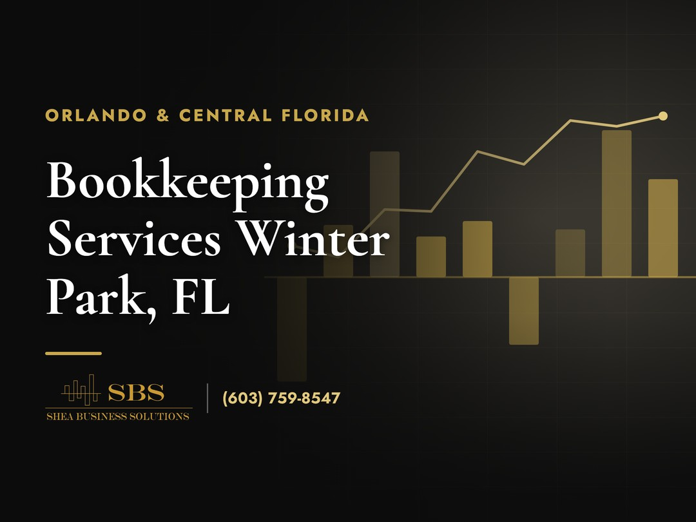
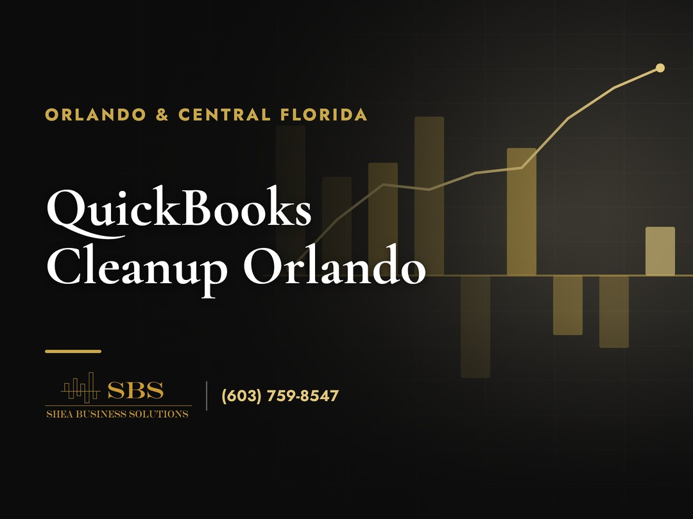
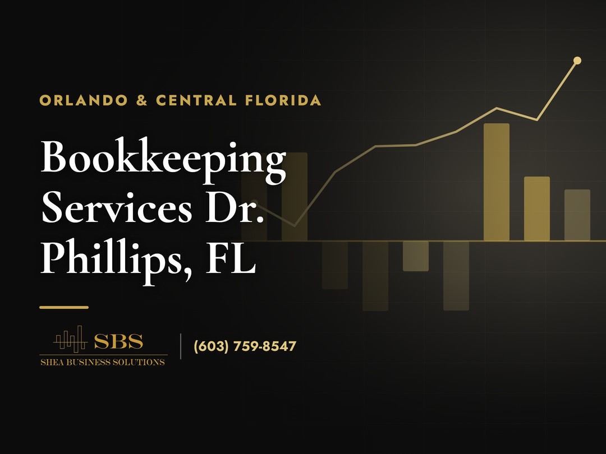
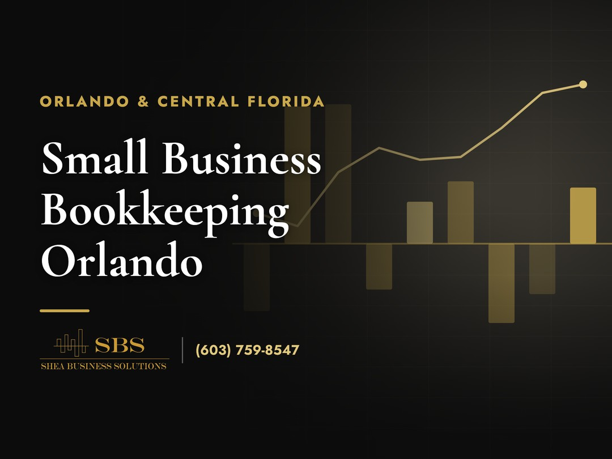
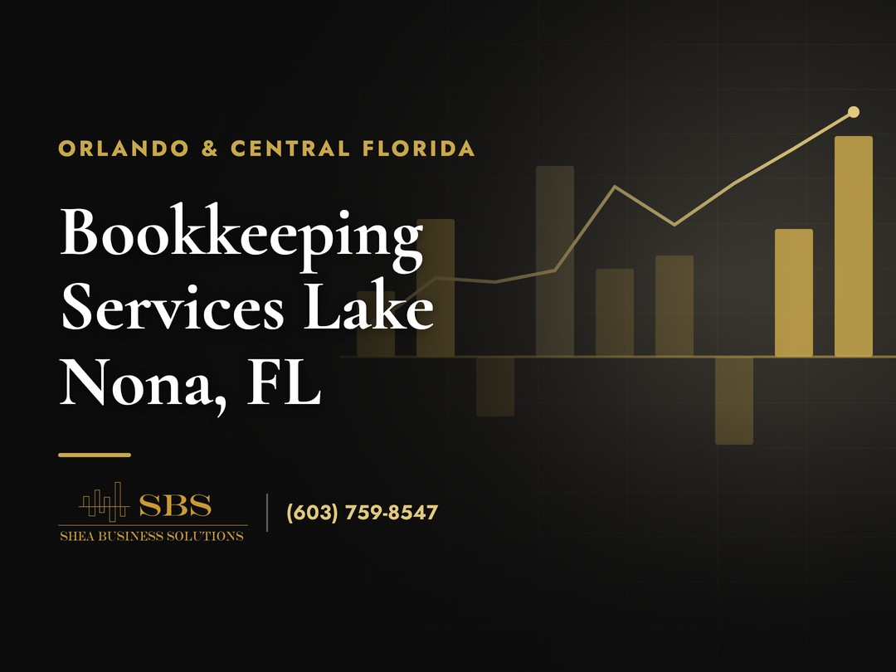
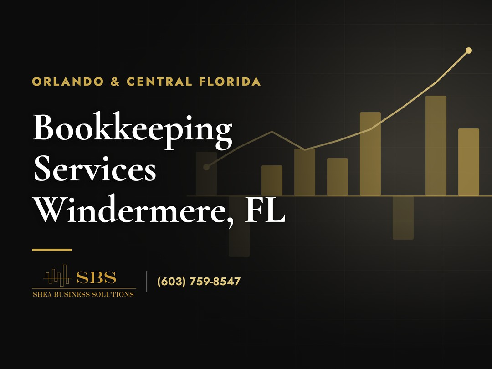
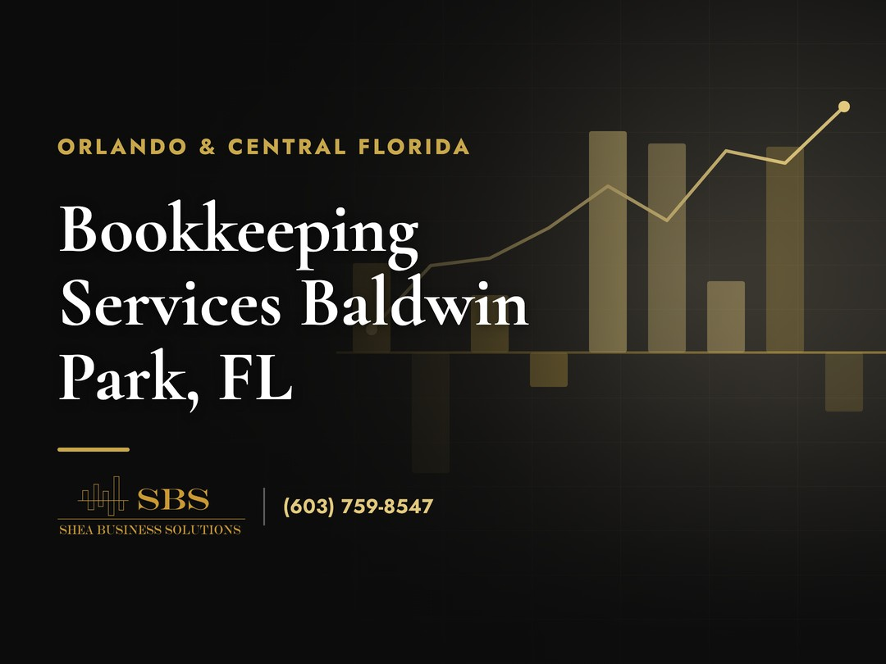

Hiring a QuickBooks ProAdvisor Orlando owners can actually get on the phone makes more difference than most people expect. I'm Ryan, owner of Shea Business Solutions, a QuickBooks Level 2 Certified ProAdvisor and Certified Payroll Specialist working with small businesses across Orlando and Central Florida. Level 2 is the advanced certification, and it covers the parts of QuickBooks that quietly go wrong: reconciliations that never happened, payroll mapped to the wrong accounts, a profit and loss report that doesn't match what's in the bank. Day to day I handle monthly bookkeeping, QuickBooks setup and cleanup, payroll processing, account reconciliations, and P&L and balance sheet reporting. Restaurants, contractors, gyms, retail shops, service businesses. The goal is books you can trust, closed every month, with reports that tell you what your business is actually doing. If you've been searching for a QuickBooks ProAdvisor Orlando businesses trust with their books, learn more below and book a free consultation. No pressure, just a straight look at where your books stand. #OrlandoBookkeeping #QuickBooksProAdvisor #OrlandoSmallBusiness

Winter Park runs on independent retail, restaurants, boutiques, and professional offices, and the bookkeeping services Winter Park businesses need reflect that mix. Retail-heavy books come with their own traps: daily sales that never tie out to bank deposits, sales tax that gets collected but tracked loosely, inventory purchases dumped into one catch-all expense line. Left alone, each of those problems compounds month after month. For Winter Park owners I handle monthly bookkeeping, account reconciliations, QuickBooks setup and cleanup, payroll processing, and monthly P&L and balance sheet reporting. Everything closes monthly, so quarter-end and January stop being a scramble. And if your books are already months behind, that's fixable. Catch-up work is a normal engagement for us at Shea Business Solutions, not an emergency. Florida's filing calendar doesn't wait for anyone, so getting current before the next deadline is worth doing now. If you want bookkeeping services Winter Park businesses can lean on year-round, learn more on the page below and book a free consultation. #WinterParkFL #BookkeepingServices #CentralFlorida

How do I know if my QuickBooks file needs a cleanup? It's the question I hear most from business owners here, and there are five signs I look for. Your accounts haven't been reconciled in months. Your profit and loss report doesn't make sense when you read it. Duplicate transactions are inflating your numbers. You're dreading tax time because of the state of your books. Or you have uncleared transactions sitting in the file dating back years. Any one of those means the file needs attention. A real QuickBooks cleanup Orlando businesses can count on is more than deleting a few bad entries. It means reconciling every account, fixing miscategorized transactions, clearing duplicates, and getting the file to where the reports actually reflect the business. I published a full breakdown of all five signs, what a proper QuickBooks cleanup Orlando companies should expect involves, and what it typically costs. Learn more below, and if your file has gotten away from you, Shea Business Solutions offers a free assessment to size it up. #QuickBooksCleanup #OrlandoBookkeeping #QuickBooksHelp

Dr. Phillips is home to Orlando's Restaurant Row, plus the salons, med spas, and medical offices that fill out the neighborhood, and the bookkeeping services Dr. Phillips businesses need depend on which of those worlds you're in. Restaurant books are their own animal: high transaction volume, tips, vendor invoices arriving daily, and margins tight enough that miscategorized costs hide real problems. Salons and medical offices carry different traps, from payroll structure to how packages and prepayments should hit the books. My monthly work covers bookkeeping, account reconciliations, QuickBooks setup and cleanup, payroll processing, and P&L and balance sheet reporting, tuned to how your specific business runs. The quarterly and year-end grind lands on every Florida owner on a fixed calendar, and clean monthly books are what make those deadlines uneventful. Behind on the books? Start with a free assessment from Shea Business Solutions. If you're comparing bookkeeping services Dr. Phillips has nearby, learn more on the page below. #DrPhillipsFL #BookkeepingServices #RestaurantRow

What does small business bookkeeping Orlando companies rely on actually cost? I get asked about pricing constantly, so I put the full answer in writing and published it on the Shea Business Solutions blog. The guide covers what moves the price up or down, things like transaction volume, number of accounts, payroll, and how far behind the books are, along with typical pricing ranges here in Orlando, so you can sanity-check any quote you get. Including mine. It also answers the question underneath the question: what should a monthly service actually include? Reconciliations, categorized transactions, monthly P&L and balance sheet reports, and a person who answers when something looks off. And it takes an honest swing at whether you can just run QuickBooks yourself and save the money. Sometimes you genuinely can, and the guide is upfront about when DIY works and when it quietly costs more than it saves. If you're pricing out small business bookkeeping Orlando has to offer, read the full breakdown at the link below. No email wall, no gimmick. Learn more and use it however it helps. #OrlandoSmallBusiness #Bookkeeping #OrlandoFL

Lake Nona might be the fastest-changing corner of Orlando, with medical offices, fitness studios, contractors, and service businesses opening every month. That growth is exactly why the bookkeeping services Lake Nona owners choose matter early. A business that starts with clean books scales without drama; one that starts messy pays for it at every deadline. Quarterly taxes, 1099s, and the January scramble hit hardest when the books were an afterthought all year. I work with Lake Nona businesses on monthly bookkeeping, QuickBooks setup and cleanup, account reconciliations, payroll processing, and monthly P&L and balance sheet reporting. If the QuickBooks file is already messy, we fix it before it compounds: cleanup first, then a monthly close that keeps it clean going forward. Shea Business Solutions works this side of Orlando every week, so you're talking to a bookkeeper who knows the area, not a call center. If you're comparing bookkeeping services Lake Nona businesses actually use, learn more on the page below and book a free consultation. #LakeNona #BookkeepingServices #OrlandoFL

Why do so many Windermere business owners hand off their books? Usually it isn't that they can't do it themselves. It's that quarterlies, 1099s, and the January crunch keep arriving whether business is busy or not, and every hour spent untangling QuickBooks is an hour not spent running the company. That's the point where the bookkeeping services Windermere owners actually stick with stop feeling like an expense and start feeling like a trade up. Worth knowing: Windermere is really two Windermeres, the small town proper and the larger communities sharing the zip code, and I work with businesses across both. The monthly engagement covers bookkeeping, account reconciliations, QuickBooks setup and cleanup, payroll processing, and P&L and balance sheet reporting. If the books already got away from you, cleanup comes first, then a monthly close that keeps them current. If you've been weighing bookkeeping services Windermere businesses rely on, learn more on the page below. Shea Business Solutions offers a free consultation to see exactly where your books stand. #WindermereFL #BookkeepingServices #CentralFlorida

Baldwin Park was built as a walkable village center, and its storefronts, restaurants, studios, and professional offices come with village-scale bookkeeping problems: owner-operators wearing every hat, personal and business expenses blurring together, reconciliations skipped during the busy months. In a district like this, the books usually go wrong slowly, then all at once in January. The bookkeeping services Baldwin Park businesses get from me are built around a monthly close: bookkeeping, account reconciliations, QuickBooks setup and cleanup, payroll processing, and monthly P&L and balance sheet reports you can actually read. Florida hands every owner the same calendar of quarterly and year-end deadlines, and clean monthly books are what make that calendar boring, in the best way. The engagement starts with a free consultation and a straight assessment of where your books stand, catch-up included if you need it. If you're looking at bookkeeping services Baldwin Park has close to home, learn more on the page below and reach out to Shea Business Solutions. #BaldwinParkFL #BookkeepingServices #OrlandoSmallBusiness